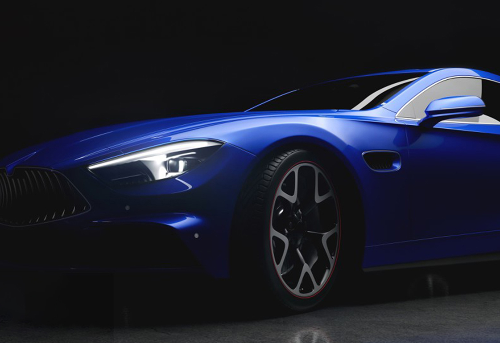
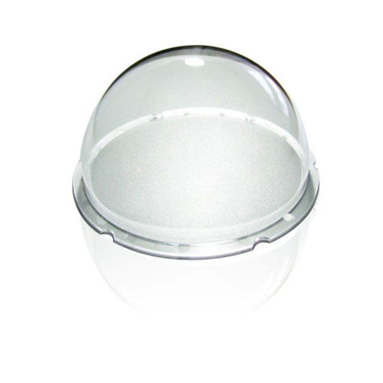
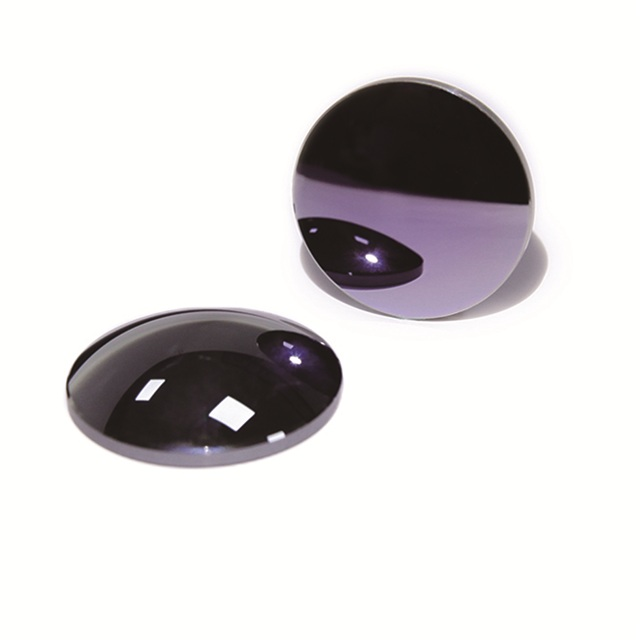
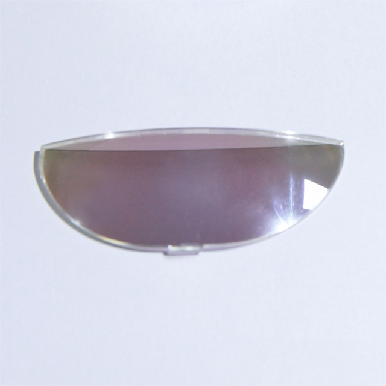
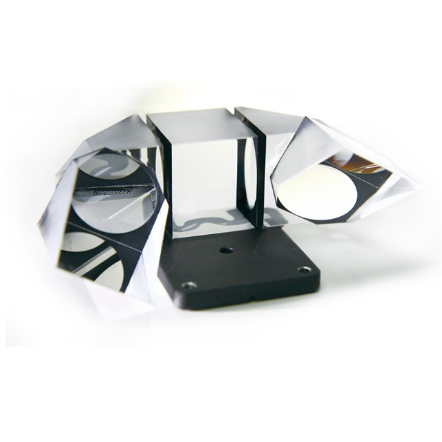
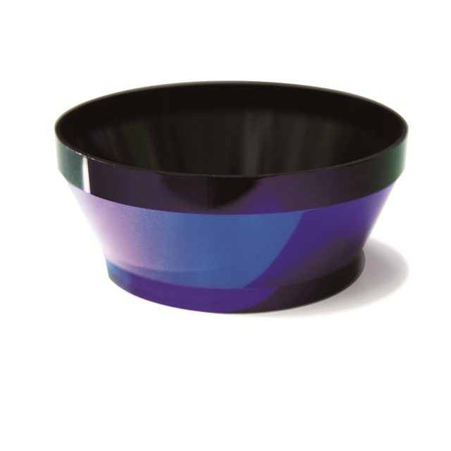

New
Precision optics,
Ra 1nm
Surface finish
P-V 100nm
Free-form precision
72h
First review window
Precision optics,
engineered for tomorrow’s products.
From concept review to stable volume production, we help hardware teams turn demanding optical requirements into repeatable manufacturing outcomes.
Loading interactive 3D model...
One partner from design to delivery.
Share your optical requirement once. We align feasibility, pilot validation and scale-up under one consistent workflow.
- Fast engineering response
- Pilot-ready execution planning
- Traceable quality checkpoints
Optics for the products people rely on every day.
Built with precision. Scaled with confidence.
Why Teams Choose Fran
Precision that scales from sample to production.
5x
Faster alignment between optical intent and manufacturing feasibility.
3D
Integrated communication across optics, mechanics and quality teams.
100%
Visibility from feasibility review to outgoing inspection checkpoints.
24/7
Support rhythm suited to distributed global engineering programs.
Execution Workflow
A straightforward path from drawing to production.
Our process helps teams move quickly while preserving optical intent: early risk visibility, measurable pilot criteria and controlled scale-up.
01 · Feasibility Review
Validate geometry, tolerance and coating risk before commitment.
02 · Pilot Validation
Use structured metrology feedback to stabilize process decisions.
03 · Controlled Scale-Up
Transition to volume with consistency, traceability and clear reports.


Product Families
Optical components for advanced sensing and imaging.

Dome Optics
High-transmission optical domes for sensing and surveillance systems.

Infrared Lens Sets
Thermal-ready optical components for low-light and harsh environments.

AR / XR Elements
Free-form and curved optical parts built for wearable display stacks.

Medical Optics
Precision prism assemblies for imaging and diagnostic devices.

Lidar Components
Coated optical parts for autonomous sensing and smart mobility.
Bring your optical requirement. We return a build-ready plan.
Share your geometry, timeline and performance goals. Our team will provide a practical route balancing precision, schedule and manufacturability.